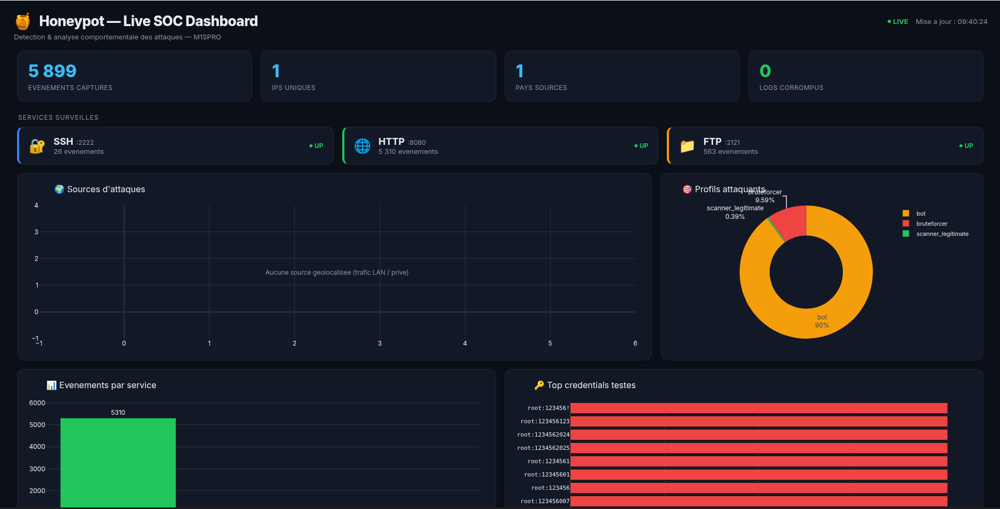

🍯
Le Honeypot
Un piege pour attraper les pirates
Un faux serveur qui attire les attaques, puis les analyse.
M1 Securite
Mohammed Sellak
Rachid Oubenazha
Projet 35h
Fleches ← → pour changer de slide · touche S = mes notes
C'est quoi un honeypot ?
Un honeypot, c'est un faux serveur.
Il fait semblant d'etre une vraie machine.
Les pirates l'attaquent... et on enregistre tout.
Image simple : c'est comme un pot de miel. 🍯
Le miel attire les insectes. Notre faux serveur attire les pirates.
Pourquoi ?
👁
Voir les attaquesComprendre qui attaque et comment.
🔒
Sans risqueLe vrai serveur n'est jamais touche.
📝
ApprendreOn garde les preuves pour se defendre.
Mon piege a 3 portes
🔐
SSHConnexion a distance. On note les mots de passe essayes.
🌐
HTTPUn faux site web. On note les pages que le pirate cherche.
📁
FTPUn faux partage de fichiers avec des appats.
3 services = 3 facons differentes d'attirer les pirates.
Comment ca marche ?
1. Le piege
SSH / HTTP / FTP
→
2. On enregistre
chaque action
→
3. On analyse
qui ? d'ou ?
→
4. On affiche
tableau de bord
Tout est automatique, en direct.
L'architecture de notre application
👾 Attaquants
Hydra, Nikto
→
🔐 SSH · 🌐 HTTP · 📁 FTP
les 3 pieges
→
📝 Logs signes
HMAC
↓
🧠 Analyse
enrichir + classer + stocker
→
📊 Tableau de bord
en direct
→
🛡 Exports defense
Sigma, STIX
Tout tourne dans Docker : 6 conteneurs isoles.
On reconnait le type de pirate
Le bruteforcerIl essaie plein de mots de passe, tres vite.
Le botUn robot automatique qui scanne.
L'humainUne vraie personne qui tape des commandes.
Le scanner connuUn robot legitime (Shodan, Google...).
Le programme decide tout seul, avec des regles simples et claires.
Le tableau de bord

Une page web qui montre tout en direct : nombre d'attaques, pays, types de pirates.
Est-ce que ca marche ? Oui.
J'ai teste avec de vrais outils de pirate (Hydra, Nikto).
Mon piege est-il credible ?
Un bon piege ne doit pas se voir. Je l'ai teste avant / apres.
Avant
6/30
Apres mes ameliorations
21/30
+15 points ! Mon faux serveur ressemble bien plus a un vrai.
Securite et loi
C'est securiseLe piege est enferme dans des conteneurs Docker. Le pirate ne peut pas sortir.
C'est legalJe n'attaque personne. Je respecte le RGPD (j'anonymise les adresses).
Regle d'or : un honeypot observe, il ne riposte jamais.
💻
Demonstration
Le tableau de bord en direct
Pour conclure
- ✅ Un piege a 3 services qui attrape les pirates.
- ✅ Une analyse automatique : qui, d'ou, quel type.
- ✅ Teste et prouve : 5/5, plus de 5000 attaques.
- ✅ Securise et legal.
Plus tard : rendre le piege encore plus credible et envoyer les alertes a une equipe de securite.
🔐🌐📁
Merci !
Avez-vous des questions ?
Mohammed Sellak & Rachid Oubenazha · M1SPRO · Ecole IT d'Amiens